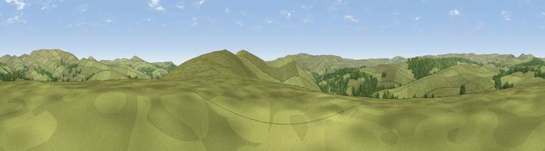

Viewpoint near Dartmeet
#28512 in England · top 59% of its area beats it · near DartmeetWhere it is
The exact computed spot (SX 68152 75419). Click the marker for map links.
The view, rendered

A 360° render of this exact spot computed from the terrain model, tree cover and land cover — summer colours, afternoon light, calibrated against photographs of famous viewpoints. Real trees, hedges and buildings will differ in detail.
The panorama
Grey silhouette: terrain skyline in each direction (720 bearings, Earth curvature and refraction included). Dashed green: skyline with trees (+15 m) and buildings (+8 m) as obstacles. Blue strip: how far the ground is visible on each bearing.
Where the view opens
Wedge length = distance to the farthest visible ground on that bearing (vegetation-aware). Rings at 10, 25 and 50 km.
What fills the view
89% grassland · 11% woodland
Angular shares of the visible panorama (visual magnitude), not map area. Landscape diversity 0.16 (0–1 Shannon).
Key numbers
More beautiful places nearby
The staircase of upgrades: each row has a higher view potential than everything closer. Driving times are estimates from straight-line distance, calibrated against real road routing — check an actual route before setting out.
| Place | Direction | Drive | Score |
|---|---|---|---|
| Viewpoint near Dartmeet | SSE · 1 km | ~4 min | 71.5 |
| Viewpoint near Widecombe-in-the-Moor | NE · 4 km | ~10 min | 76.5 |
| Chinkwell Tor | ENE · 6 km | ~12 min | 77.5 |
| Viewpoint near Buckland in the Moor | ESE · 6 km | ~12 min | 80.7 |
| Viewpoint near Dousland | WSW · 14 km | ~25 min | 81.0 |
| Shell Top | SW · 14 km | ~26 min | 81.8 |
| Viewpoint near Lee Moor | SW · 18 km | ~30 min | 82.7 |
| Viewpoint near Kenton | ENE · 25 km | ~40 min | 82.9 |
50.56360, -3.86295 · source: osm peak · position refined by local search. Computed location — check access rights before visiting.